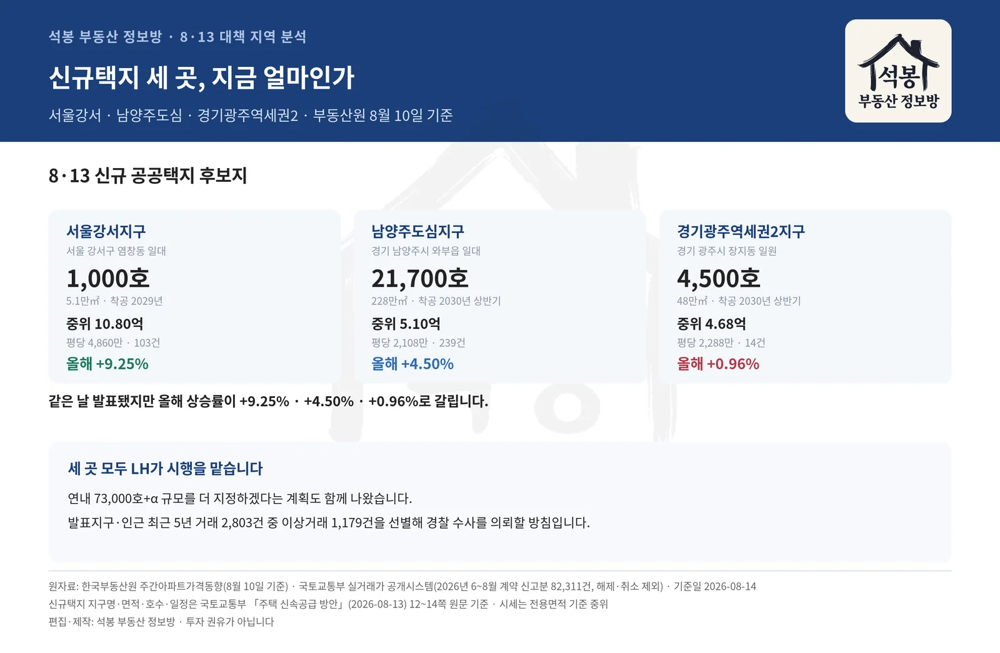
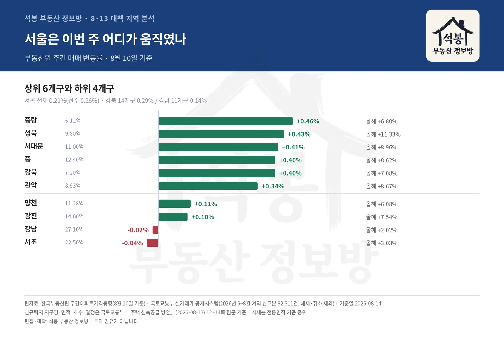
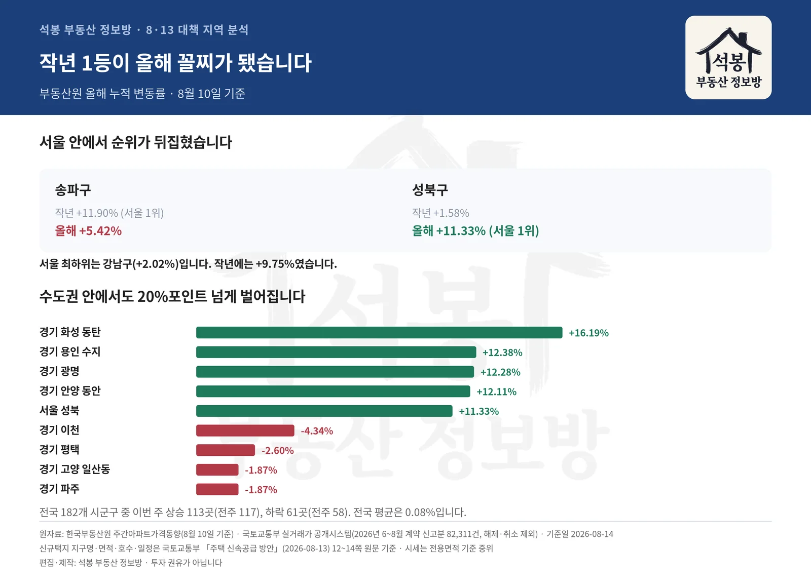

8월 13일 정부가 수도권에 23만호를 더 짓겠다고 발표하면서 신규 공공택지 세 곳을 함께 지정했습니다. 서울강서지구(강서구 염창동), 남양주도심지구(와부읍), 경기광주역세권2지구(광주시 장지동)입니다. 세 곳을 합쳐 2만7천여 호이고, 3~4년 안에 착공한다는 계획입니다. 기사에는 대개 "몇 호"까지만 나오는데 정작 궁금한 건 그 동네가 지금 어떤 곳이냐일 겁니다. 실거래를 열어봤습니다. 세 지구의 위치·면적·호수·일정은 국토교통부 「주택 신속공급 방안」 안건 원문 12~14쪽에서 직접 확인한 값입니다. 국토교통부 보도자료 게시글(2026-08-13)에서도 같은 문서를 받으실 수 있습니다.
세 곳은 지금 이 정도입니다
아래 시세는 2026년 6월부터 8월까지 그 동네에서 실제로 신고된 아파트 매매입니다. 맨 오른쪽은 부동산원이 집계한 올해 누적 상승률(8월 10일 기준)입니다.
택지
규모
면적
착공 목표
동네 시세 (중위)
올해 상승률
서울강서지구 서울 강서구 염창동 일대
1,000호
5.1만㎡ 1.5만평
2029년
10.80억 평당 4,860만원 · 103건
+9.25%
남양주도심지구 경기 남양주시 와부읍 일대
21,700호
228만㎡ 69만평
2030년 상반기
5.10억 평당 2,108만원 · 239건
+4.50%
경기광주역세권2지구 경기 광주시 장지동 일원
4,500호
48만㎡ 15만평
2030년 상반기
4.68억 평당 2,288만원 · 14건
+0.96%
서울강서지구가 들어서는 염창동은 중위 10.80억, 평당 4,860만원입니다. 세 곳 중 유일한 서울이고 값도 두 배 넘게 높습니다. 다만 부지가 5.1만㎡(1.5만평)로 작아 공급은 1,000호에 그칩니다. 2006년 민간 개발이 취소된 뒤 20년 동안 방치돼 있던 염창공원 부지입니다. LH가 시행을 맡고, 인허가와 보상을 한꺼번에 돌려 발표 후 33개월 만인 2029년 착공하겠다는 계획입니다. 3기 신도시가 발표에서 착공까지 평균 68개월 걸린 것과 비교하면 절반입니다.
남양주도심지구는 와부읍 일대 그린벨트 228만㎡(69만평)에 지정됐습니다. 21,700호로 세 곳을 합친 물량의 대부분입니다. 덕소리와 도곡리에서 239건이 거래됐고 중위 5.10억, 평당 2,108만원으로 염창동의 절반이 안 됩니다. 경의중앙선 도심역과 가깝고, 대상지 안에 고려대 덕소농장이 있습니다. 2027년 하반기 지구지정, 2029년 하반기 보상 완료를 거쳐 2030년 상반기 착공 계획입니다.
경기광주역세권2지구는 장지동 경강선 광주역 일원 48만㎡(15만평)로 4,500호 규모입니다. 경강선 경기광주역이 인접하고, 2031년 개통 예정인 수서~광주선으로 접근성이 더 좋아지는 자리입니다. 다만 장지동 실거래는 표본이 14건으로 얇아 동네 하나만으로 판단하기 어렵습니다. 광주시 전체로 넓히면 388건에 중위 4.80억, 평당 1,956만원입니다. 광주에서 거래가 가장 많은 태전동 일대와 견줘 보시면 감이 잡히실 겁니다.
같은 날 발표됐지만 온도가 다릅니다
올해 누적 상승률이 염창동이 속한 강서구 +9.25%, 남양주 +4.50%, 경기 광주 +0.96%입니다. 광주는 올해 거의 오르지 않은 곳인데 4,500호가 지정됐습니다. 부동산원 8월 10일 기준 누적.
세 곳 중 두 곳은 주변이 묶였습니다. 남양주 와부읍 도곡리·월문리·덕소리와 광주시 장지동·양벌동·역동 일원이 발표일로부터 5년간 토지거래허가구역입니다. 다음 택지가 발표될 때까지 서울 그린벨트 전역과 서울에 인접한 수도권 그린벨트도 한시 지정됩니다. 기존 개발지에 있는 서울강서지구는 인접지 지정 대상에서 빠졌습니다. 국토부는 발표지구와 인근에서 최근 5년(2021~2026) 거래 2,803건 가운데 이상거래 1,179건을 선별했고, 미성년·외지인·법인 매수나 기획부동산 의심 건은 경찰 수사를 의뢰할 방침이라고 밝혔습니다.
반대로 후보로 거론됐다가 이번엔 빠진 곳도 있습니다. 서울 서초구 내곡동 예비군훈련장 · 서울 강남구 수서역 차량기지 · 경기 하남시 감북동 일원입니다(정부 발표문에는 없고 언론 보도로만 거론된 곳입니다). 정부는 연내 73,000호+α 규모를 추가로 지정하겠다고 했으니, 이 지역들이 다음 발표에 다시 나올지가 관전 포인트입니다.

신규택지 세 곳 비교
여기서부터는 회원에게 보여드립니다
카카오 로그인 3초면 전문을 읽을 수 있습니다. 무료입니다.
가입하시면 지역 시장조사 보고서(약식)를 2회 무료로 요청하실 수 있습니다.
이미 회원이면 같은 버튼으로 로그인만 됩니다
그럼 서울은 이번 주 어디가 움직였나

서울 자치구 주간 등락
같은 주(8월 10일 기준) 서울 아파트값은 0.21% 올랐습니다. 그 전 주 0.26%보다는 둔해졌고요. 눈여겨볼 건 안에서 방향이 갈린다는 점입니다. 강북 14개구가 0.29%, 강남 11개구가 0.14%입니다.
가장 많이 오른 곳은 중랑구(+0.46%)로 신내동과 면목동 주요 단지가 올랐고, 성북구(+0.43%)는 종암동과 돈암동 대단지가 움직였습니다. 서대문구(+0.41%)는 홍제동과 북가좌동 중소형, 중구(+0.40%)는 신당동과 황학동, 강북구(+0.40%)는 미아동과 번동이 올랐습니다.
반대로 서초구(-0.04%)와 강남구(-0.02%)는 내렸습니다. 잠원동·반포동, 대치동·개포동 주요 단지에서 하락 거래가 나왔습니다. 관악구는 신림동과 봉천동 대단지가, 금천구는 독산동과 시흥동이, 구로구는 구로동과 개봉동이 오른 것과 대비됩니다.
자치구
이번 주
올해 누계
작년 누계
실거래 중위
거래
중랑
+0.46%
+6.80%
+0.29%
6.12억
574건
성북
+0.43%
+11.33%
+1.58%
9.80억
642건
서대문
+0.41%
+8.96%
+2.22%
11.00억
460건
중
+0.40%
+8.62%
+2.01%
12.40억
123건
강북
+0.40%
+7.08%
+0.58%
7.20억
240건
관악
+0.34%
+8.67%
+1.48%
8.93억
356건
노원
+0.32%
+8.47%
+0.80%
6.47억
1,334건
동대문
+0.31%
+8.63%
+1.08%
10.70억
459건
금천
+0.30%
+4.94%
+0.66%
6.07억
230건
은평
+0.28%
+7.12%
+1.10%
8.65억
551건
구로
+0.27%
+9.42%
+1.39%
7.30억
658건
강서
+0.23%
+9.25%
+1.93%
9.15억
746건
종로
+0.21%
+7.38%
+2.43%
10.00억
65건
마포
+0.20%
+6.96%
+7.40%
14.41억
268건
영등포
+0.20%
+8.55%
+5.24%
13.12억
487건
도봉
+0.17%
+6.26%
+0.28%
5.50억
560건
동작
+0.17%
+5.87%
+4.74%
14.00억
333건
성동
+0.14%
+6.87%
+9.16%
17.80억
213건
강동
+0.13%
+5.07%
+6.08%
13.90억
424건
용산
+0.12%
+3.55%
+6.78%
20.50억
118건
송파
+0.12%
+5.42%
+11.90%
19.00억
529건
양천
+0.11%
+6.08%
+6.45%
11.28억
450건
광진
+0.10%
+7.54%
+5.33%
14.60억
150건
강남
-0.02%
+2.02%
+9.75%
27.10억
363건
서초
-0.04%
+3.03%
+9.56%
22.50억
272건
부동산원 주간 매매가격 변동률(8월 10일 기준) · 실거래는 2026년 6~8월 신고분
작년 1등이 올해 꼴찌가 됐습니다
위 표에서 작년 누계와 올해 누계를 나란히 보시면 순위가 뒤집힌 게 보입니다. 송파구는 작년 11.9%로 서울 1위였는데 올해는 5.42%입니다. 강남구는 작년 9.75%에서 올해 2.02%로 서울 최하위입니다.
반대로 성북구는 작년 1.58%로 하위권이었다가 올해 11.33%로 서울 1위가 됐습니다. 중랑구도 작년 0.29%에서 올해 6.8%입니다.
경기·인천은 격차가 더 큽니다
수도권 전체로 넓히면 올해 상승률 차이가 20%포인트를 넘습니다. 1위 경기 화성 동탄이 +16.19%, 최하위 경기 이천이 -4.34%입니다.
지역
올해 누계
이번 주
경기 화성 동탄
+16.19%
+0.17%
경기 용인 수지
+12.38%
+0.29%
경기 광명
+12.28%
+0.40%
경기 안양 동안
+12.11%
+0.25%
서울 성북
+11.33%
+0.43%
경기 성남 분당
+11.17%
+0.39%
경기 성남
+10.56%
+0.38%
경기 구리
+10.11%
+0.16%
…
경기 이천
-4.34%
-0.14%
경기 평택
-2.60%
-0.01%
경기 고양 일산동
-1.87%
-0.05%
경기 파주
-1.87%
-0.10%
경기 고양 일산서
-1.36%
-0.04%
경기 화성 만세
-1.32%
+0.11%
이번 주만 보면 성남 중원구(+0.55%)가 금광동·상대원동 주요 단지 위주로, 화성 병점구(+0.42%)가 병점동·반월동 위주로, 광명시(+0.40%)가 하안동·철산동 대단지 위주로 올랐습니다. 반면 이천시(-0.14%)는 증포동·창전동 구축, 파주시(-0.10%)는 야당동·와동동에서 내렸습니다.
인천은 전체 0.01%로 거의 멈춰 있습니다. 계양구와 검단구가 각각 소폭 내렸고, 연수구와 남동구, 영종구가 조금 올랐습니다.
정리하면
전국 182개 시군구 가운데 이번 주 오른 곳이 113개, 내린 곳이 61개입니다. 지난주(상승 117개, 하락 58개)와 비교하면 오르는 지역이 줄고 내리는 지역이 늘었습니다. 전국 평균은 0.08%인데, 평균이라는 한 숫자 안에 +16.19%부터 -4.34%까지가 섞여 있습니다.
신규택지 세 곳도 마찬가지입니다. 같은 날 같은 대책으로 지정됐지만 서울강서지구가 들어서는 염창동은 이미 평당 4,860만원인 서울이고, 경기광주역세권2지구가 있는 광주는 올해 +0.96% 오른 곳입니다. "택지 발표"라는 한 단어로 묶기에는 출발점이 너무 다릅니다.
여기 적은 상승률은 부동산원 주간 조사(8월 10일 기준)이고, 시세는 국토부 실거래 신고분입니다. 두 자료는 성격이 다릅니다. 주간 조사는 표본을 추려 매주 내는 지수라 빠르지만 우리 동네 실제 거래가와는 차이가 날 수 있고, 실거래는 계약 후 30일 안에 신고하는 구조라 최근 것일수록 덜 채워져 있습니다. 그래서 시세는 석 달치를 묶어 중위값으로 봤습니다.
택지가 들어서는 동네가 앞으로 어떻게 움직일지는 착공 시기와 교통 계획에 달려 있을 겁니다. 지금 시세를 기록해 두면 나중에 비교할 기준점이 되니, 관심 있는 지역은 지도에서 한 번 확인해 두시면 좋겠습니다.

순위 역전·수도권 격차
원자료: 한국부동산원 주간아파트가격동향(8월 10일 기준, 보도자료) · 국토교통부 실거래가 공개시스템(2026년 6~8월 계약 신고분 82,311건, 해제·취소 제외) · 기준일 2026-08-14
신규택지 지구명·위치·면적·호수·일정은 국토교통부 「전월세 및 매매시장 안정을 위한 주택 신속공급 방안」(2026-08-13) 12~14쪽 원문 기준입니다 · 세부 경계와 호수는 지구지정 과정에서 달라질 수 있습니다
시세는 전용면적 기준 중위(가운데 값) · 표본 10건 미만은 얇다고 표시 · 편집·제작: 석봉 부동산 정보방 · 투자 권유가 아닙니다.